首页 > 编程笔记
Visual Studio运行Python程序（超级详细）
本节仍以第一个 Python 程序为例，继续讲解如何通过 VS（Visual Studio 的简写）实现编写和运行 Python 程序。
1) 首先打开 VS，在菜单栏中依次选择“文件 -> 新建 -> 项目”（如图 1 所示），打开新建项目对话框。
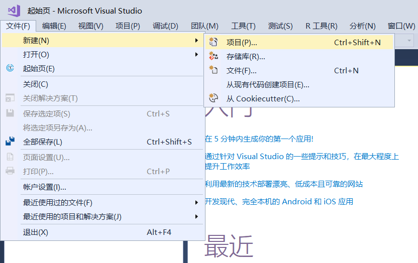
图 1 VS 打开新建项目窗口示意图
2) 新建项目对话框如图 2 所示，依次选择“Python -> Python应用程序”，并为新建项目起名（比如为 Demo），其他选择默认即可。
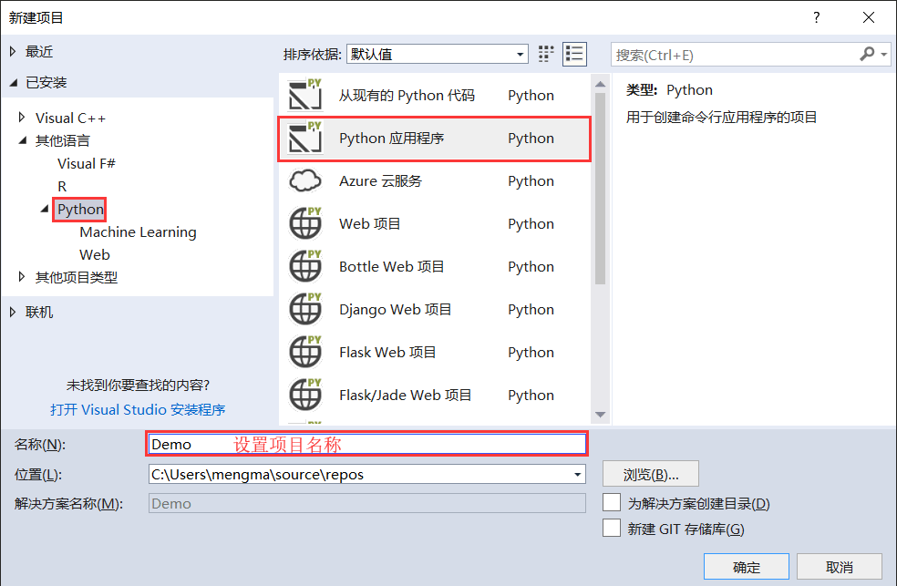
图 2 设置项目名称
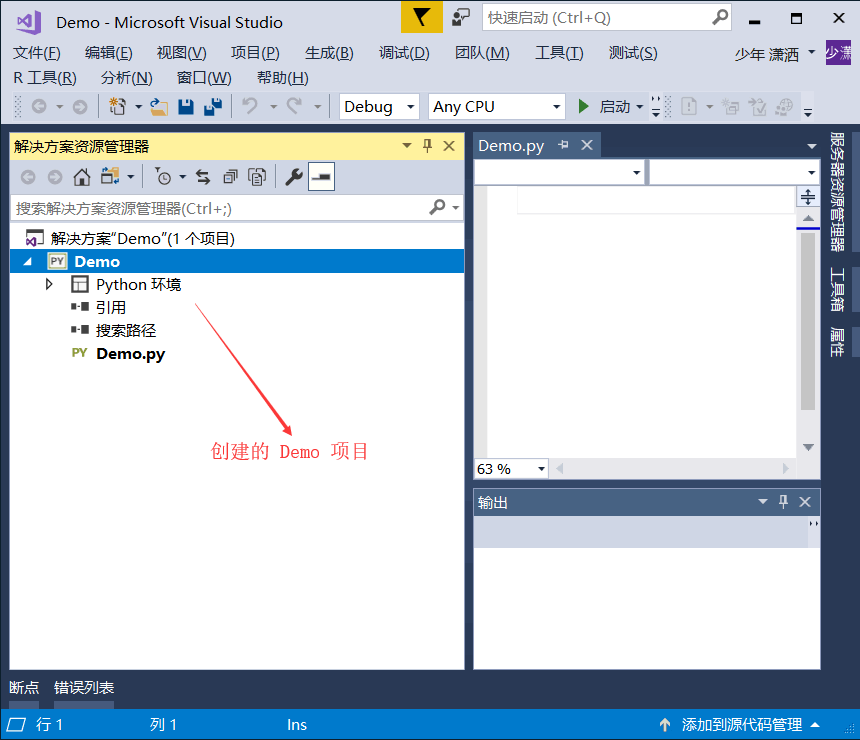
图 3 创建完成的 Python 项目
不仅如此，项目中还自动创建了一个和 Demo 项目同名的 Demo 源代码文件，我们可以在此文件中直接编写 Python 代码。但这里还是给大家介绍一下，VS 创建好项目之后，如何向项目中手动添加源代码文件。
以上面创建的 Demo 项目为例，下面手动向项目中创建一个名为 test 的源代码文件。
1) 首先，右键资源管理器中的 Demo 项目，并依次选择“添加 -> 新建项”，可以打开“添加文件”对话框。如图 4 所示。
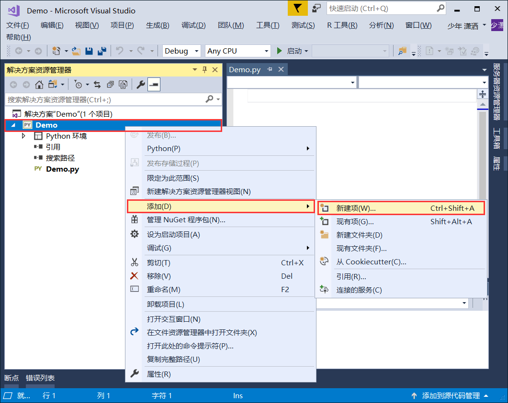
图 4 VS 添加文件具体操作
2) 打开的“添加文件”对话框，如图 5 所示，这里可以选择想要创建的 Python 文件。由于本节以简单的“Hello，World”程序为例，因此选择创建空 Python 文件即可。最后，还要记得给要添加的文件命名（比如“test”）。
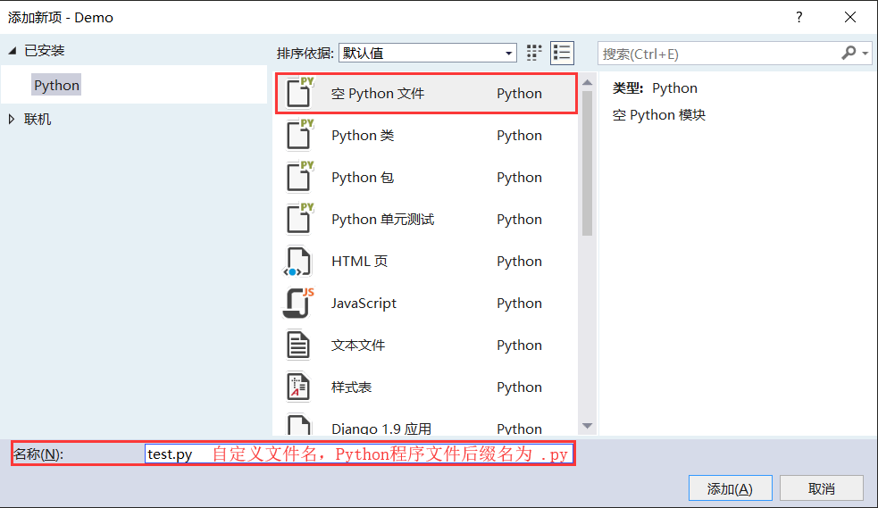
图 5 添加文件
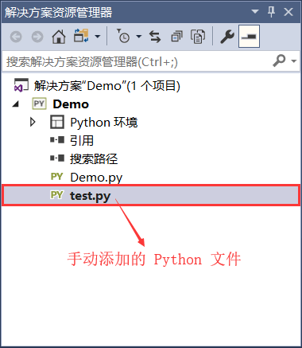
图 6 成功手动添加 Python 文件
由此，我们就可以在现有的 Demo.py 或者 test.py 文件中编写第一个 Python 程序。例如，我们在 Demo.py 文件中编写如下代码：
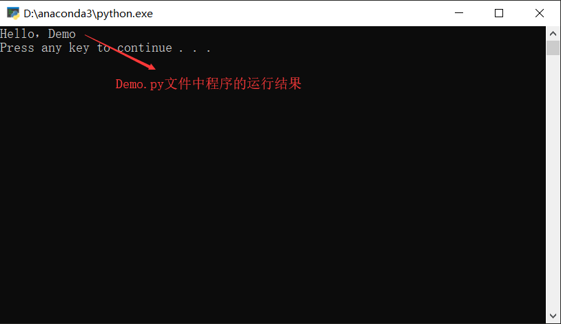
图 7 Demo.py 文件中代码的运行结果
有读者可能会问，为什么 VS 不运行 test.py 文件中的代码呢？这是因为，在默认情况下，VS 会将和项目同名的 Python 文件（本例中为 Demo 文件）设为启动文件，运行时也只会运行和启动文件相关的程序代码。
所以，如果想运行 test.py 文件中的程序，需要提前将 test.py 文件设置为启动文件，设置方式也很简单，右键点击 test.py 并选择“设置为启动文件”。此时，再次点击“启动”按钮，其运行结果如图 8 所示。
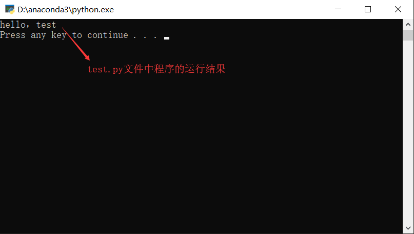
图 8 test.py 文件中代码的运行结果
VS创建Python项目
VS 和 PyCharm、Eclipse 一样，也是通过项目来管理 Python 源代码程序文件的。VS 创建 Python 项目的过程如下。1) 首先打开 VS，在菜单栏中依次选择“文件 -> 新建 -> 项目”（如图 1 所示），打开新建项目对话框。
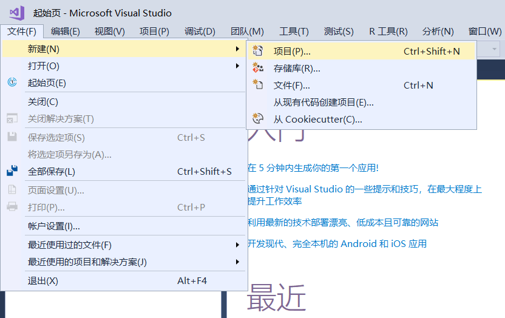
图 1 VS 打开新建项目窗口示意图
2) 新建项目对话框如图 2 所示，依次选择“Python -> Python应用程序”，并为新建项目起名（比如为 Demo），其他选择默认即可。
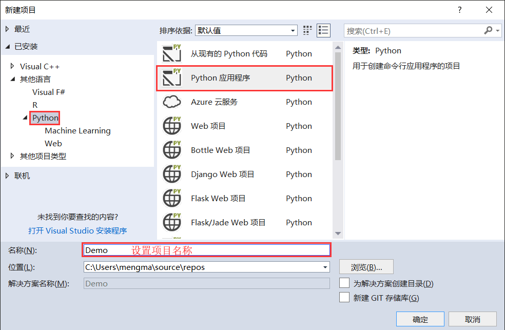
图 2 设置项目名称
3) 点击“确定”之后，会回到 VS 主界面，此时可以看到，VS 资源管理器中已经出现了 Demo 项目，如图 3 所示。直接使用快捷键“Ctrl+Shift+N”，也可以打开此窗口。
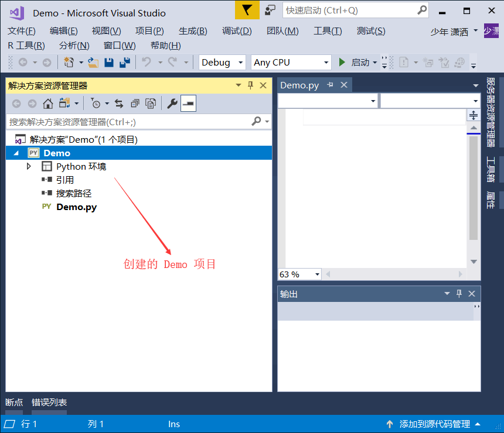
图 3 创建完成的 Python 项目
不仅如此，项目中还自动创建了一个和 Demo 项目同名的 Demo 源代码文件，我们可以在此文件中直接编写 Python 代码。但这里还是给大家介绍一下，VS 创建好项目之后，如何向项目中手动添加源代码文件。
以上面创建的 Demo 项目为例，下面手动向项目中创建一个名为 test 的源代码文件。
1) 首先，右键资源管理器中的 Demo 项目，并依次选择“添加 -> 新建项”，可以打开“添加文件”对话框。如图 4 所示。
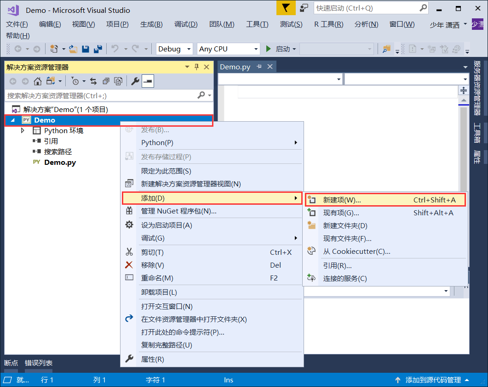
图 4 VS 添加文件具体操作
2) 打开的“添加文件”对话框，如图 5 所示，这里可以选择想要创建的 Python 文件。由于本节以简单的“Hello，World”程序为例，因此选择创建空 Python 文件即可。最后，还要记得给要添加的文件命名（比如“test”）。
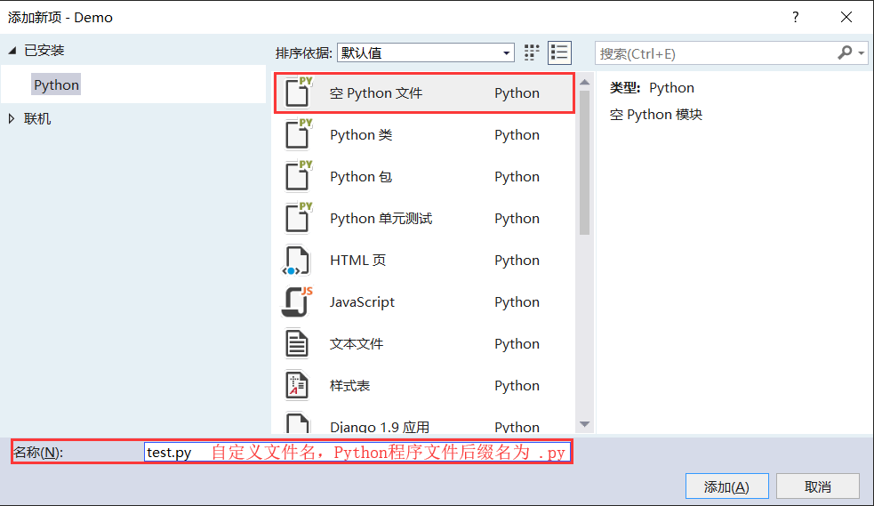
图 5 添加文件
3) 点击“添加”按钮后，VS 会回到主界面，此时再次观察 Demo 项目，发现其多了一个 test.py 文件，这就是我们手动添加的文件，如图 6 所示。直接使用快捷键“Ctrl+Shift+A”，也可以打开此窗口。
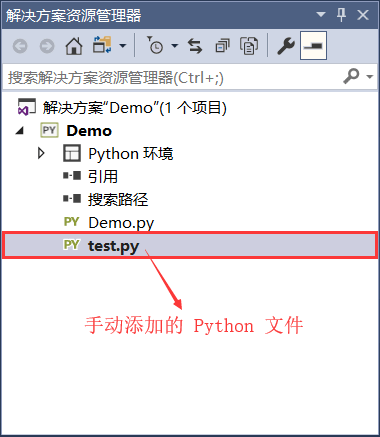
图 6 成功手动添加 Python 文件
由此，我们就可以在现有的 Demo.py 或者 test.py 文件中编写第一个 Python 程序。例如，我们在 Demo.py 文件中编写如下代码：
print("Hello，Demo")
在 test.py 文件中编写如下代码：
print("hello，test")
编写完成之后，VS 运行程序也很简单，只需要点击“启动”按钮，或者按“Ctrl+F5”，即可运行程序。点击之后，可以看到运行结果如图 7 所示。
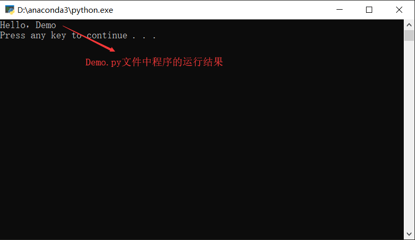
图 7 Demo.py 文件中代码的运行结果
有读者可能会问，为什么 VS 不运行 test.py 文件中的代码呢？这是因为，在默认情况下，VS 会将和项目同名的 Python 文件（本例中为 Demo 文件）设为启动文件，运行时也只会运行和启动文件相关的程序代码。
所以，如果想运行 test.py 文件中的程序，需要提前将 test.py 文件设置为启动文件，设置方式也很简单，右键点击 test.py 并选择“设置为启动文件”。此时，再次点击“启动”按钮，其运行结果如图 8 所示。
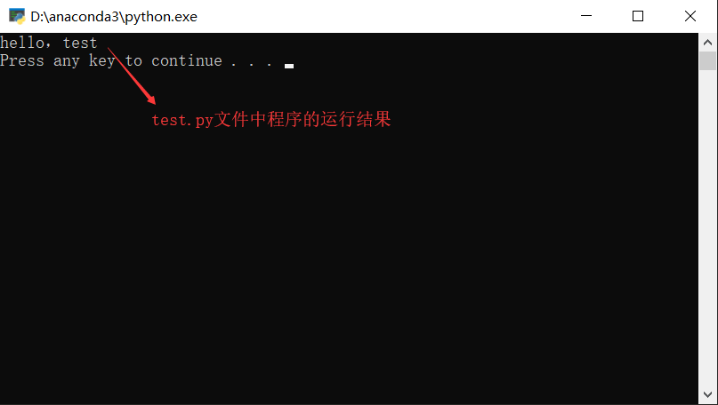
图 8 test.py 文件中代码的运行结果
关注公众号「站长严长生」，在手机上阅读所有教程，随时随地都能学习。内含一款搜索神器，免费下载全网书籍和视频。

微信扫码关注公众号